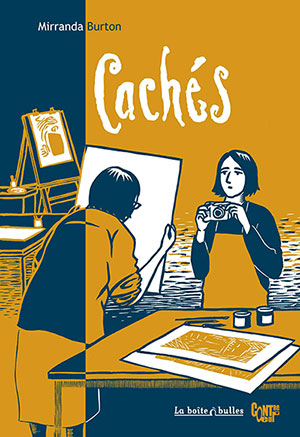
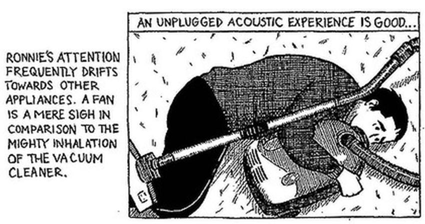
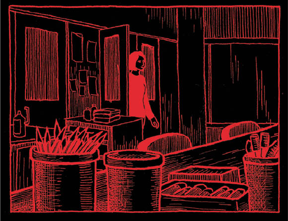

|
Hidden (A Graphic Novel) : Mirranda Burton |
|
 |


Book Description At
first glance,
Mirranda
Burton’s art room is a hidden world full of strange eccentric
characters and mysterious minds. But stay a while and in that room
you'll find all the joy and sadness of life, the pain and comfort of
community, and the ultimate meaning of art. This hidden world is our
world; it is where we all live, together and alone. In Hidden
Mirranda Burton is writing about what matters most, and she does so
with such gentle humanity and wisdom these stories will stay with you
long after you turn the final page and reluctantly close the art room
door. It is one of the most beautiful books I have ever read.”
Dylan
Horrocks, author of Hicksville
ISBN 9780646559063 Published 2011 $22.00 104 pgs Book Sample Reviews "Ten of Australia’s best literary comics" THE CONVERSATION September 11, 2018 6.15am AEST With news that the Man Booker Prize long list includes a graphic novel for the first time, the spotlight is on comics as a literary form. That’s a welcome development; the comic is one of the oldest kinds of storytelling we have and a powerful artform. Right now, the Australian comics community is producing some of the best original work in the world. Australian comics punch above their weight globally. Many have been picked up by international publishers and nominated for international and national literary awards - yet remain little known at home. Some are directed at an adult audience; some are for all ages. They tackle issues ranging from true crime to environmental ruin to life in detention. As someone who has researched comics for years - and been a fan since childhood - I want to share with you some highlights from the contemporary Australian comic scene. Here are 10 Australian comics of note, in no particular order. . . . Hidden, by Mirranda Burton“Everyone sees the world in their own unique way.” That’s how Mirranda Burton introduces Steve, one of the intellectually impaired adults she teaches art to. But Hidden isn’t about how her subjects see the world. It’s about how Mirranda sees them - with care, respect and humour. Mirranda’s fictionalised stories reveal how engaging meaningfully with people can shift your perspectives in beautiful and unexpected ways. Artist Uncovers A Hidden World Carolyn Webb The Age, 30 August 2011 An
artist has turned her weird and wonderful experience teaching art to
intellectually disabled adults into a new book of graphic short stories.
 Characters in Hidden, launched yesterday at the Melbourne Writers Festival by Mirranda Burton, include Ronnie, who hugs vacuum cleaners, Steve who’s prone to farting and stripping naked, and Annie, who only draws genie bottles. Ms Burton, a former Disney animator with no previous link to the intellectually disabled, writes that entering the classroom “was like opening a new tin of ink and rolling out a colour I had never seen before”.The book gives fictionalised sketches of people at a Melbourne institution with conditions such as acquired brain injury and Down Syndrome. Ms Burton draws herself as an earnest woman keen to do the right thing. But the students’ obsessions send her into fantasies of asking Elvis Presley for teaching advice or walking inside a vacuum cleaner, where she asks the resident genie whether her art room has a future. “It’s affectionate humour,” she says. “I think if you work in this industry or have a relative with a disability, and you can’t laugh, you'll go crazy.” The students taught her that art could be unselfconscious, without ego and a handy vehicle for emotions. Mercurial Eddie can’t speak, but lights up when he devises scrawled pencil drawings of his bike, his mandolin and his teacher. Gentle Melanie draws a touching love heart for her boyfriend. “It's symbolic of what she’s expressing. Whether it’s a fine piece of artwork that will go in the National Gallery is completely irrelevant,” says Ms Burton. The title Hidden was inspired by autistic woman Julie, who would hold her art up to block her face when photographed. It also describes the world of the intellectually disabled, that not many people see, that a lot of people misunderstand and fear”. Mindless bureaucracy - cost cutting, building closures - is a constant threat to the characters’ fragile world. Echoing a recent news story of the closure of a disabled men’s house in Northcote, Julie is bereft when she is suddenly moved to a new suburb. She takes a bus to her old neighbourhood shop “just so she could buy a chocolate bar from a familiar face”. While she will continue teaching, next month Ms Burton starts a year-long artist residency at Clifton Pugh’s property Dunmoochin, near Hurstbridge. Hidden was launched at Federation Square by comic book artist and publisher Bernard Caleo. Mr Caleo said Hidden was “a very significant book in the development of autobiographical comics,” because it doesn’t navel-gaze. “It’s clearly Mirranda's story, it’s her life, but she’s like a guide, a Virgil, taking us the reader into an unseen, unexperienced world. The art students are trying to understand this incomprehensible world and we’ve got Mirranda doing the same for us, the reader.” Back to top Friday Fave: Hidden by Mirranda Burton Laurie Steed Annabel Smith blog, May 2013 I had flown in
from Perth to attend
The 2011 Melbourne Writers Festival. I wasn’t on the programme that
particular year, and, truth be told, was not sure why I’d come. I spoke
the previous year on being a professional writer; now here I was being
a professional slacker instead.
They had invited graphic novelists to work in The Atrium at Federation Square as part of the festival’s Don’t Feed the Artists installation, a high-definition camera set up to chart their every sketch, projected up onto a huge screen. Having spent the day watching worlds created with my friend Andy, the two of us reclined in matching beach chairs, I ventured across to the bookstore. I perused the shelf looking for something special... something different. I wish I’d gone to the Hidden launch at MWF 2011, but me being me, I missed the boat. As it was, she made my festival. Mirranda never set foot into my world and yet it feels like she was there, seeing what I saw, taking it all in alongside me. Together but alone, we thought about what it means to love, be loved, and stay human. If I ever meet her, I’ll give her a big hug, unless she’s not a hugger, in which case I’ll just say, “Hey, I’m Laurie, it’s great to finally meet you,” and politely shake her hand. I love this book more than muffins, cakes and most types of biscuits. Read it and you will too. Laurie Steed is a writer, reviewer, editor, and freelance journalist. Back to top The Fine Line Between Okay and Not Okay: Mirranda Burton’s Hidden Owen Richardson Australian Comics Journal, 16 May 2013 I feel
uncomfortable around the mentally disabled.
It isn’t something that a person is supposed to say, but I feel as if it’s something that I have to say. I have very little experience with, and knowledge of, the mentally disabled, and thus I either find myself patronising them or being slightly afraid of them. I’m working on it, as clearly this is not ideal, but it’s a work in progress. Mirranda Burton, thankfully, is not me. Mirranda Burton is an extremely talented woman, who tells stories about her time as a teacher within an art class for the mentally disabled. What kind of disabilities her subjects suffer from are never revealed, simply because they don’t matter. What matters in Burton’s Hidden is their personalities, their voices, and how they express themselves through their art. The first story concerns the mercurial Eddie, who lives for his sister’s visits, his pencils sharpened to fine points, and his etchings. He etches intricate patterns on pieces of paper until the paper is nothing but black. Then there’s Julie, the resident rock’n’roll afficiando. Julie’s so skilled with lino prints that Mirranda attempts to enrol her into an art course at a local TAFE-like institution, however unfortunately Julie can’t get in because of a lack of computer skills. She has also recently moved home and was mugged. Other characters who are in the class include Steve, the flatulent weather guru who stages nude protests when he doesn’t get his way, and signs his art ‘p’ and ‘s’, short for ‘pig’ and ‘stink’. Annie, who feels the need to protect the art room from those ‘different’ from her, aka the high support mental patients. And Ronnie, one of those patients, who is obsessed with fans and vacuum cleaners. Themes of anxiety and fear run throughout the graphic novel, but it’s because Burton feels protective of her class, rather than afraid of them. She tries to understand and help them in ways big and small, whether it’s trying to find Julie alternative accommodation so that she doesn’t feel so afraid, or constantly sharpening Eddie’s pencils. But most of all, Burton is worried about how the outside world sees her class, the increasing funding cuts to disability support, and the ways in which we see people who are ‘different’. Naturally, it was an idea that somebody relatively privileged and ignorant like me had to mull over, anyway. The irony of researching comic books is that I don’t get too many opportunities to read them anymore, and so I hope that when I do get to read one, it’s worth investing my time in, leaving me with questions, thoughts and feelings. From Hell left me feeling disturbed. Rooftops left me feeling pensive and nostalgic. Maus left me feeling emotionally drained and sad, but then again if anyone can read Maus and NOT feel that, they’re either an android or a sociopath. Hidden was one of those graphic novels that left me with a distinct feeling. I suppose the most accurate way that I could describe it as disquieted, the feeling that I’ve looked into a world that I’ve never properly understood, and like Burton, becoming emotionally invested in these people so I start to fear for them, rather than actually fear what they are. The longest story, ‘That’ll Be the Day’, concerns Julie, and for good reason. It’s the most ambitious, both in terms of emotion and artwork. Using strong black and white contrasts and fine lines, Burton’s art is also characterised by people who manage to be expressive, even as they are drawn with basic strokes. It’s a skill, and I’d put Burton up there with Clowes and Burns in that regard. But the real surprise came from Burton’s whimsy, which fully suited an introspective piece such as this. Told from the author’s point of view, there are flights of fancy, such as when Burton, confounded by Annie’s questions about ‘medicine being yummy’ on the Titanic, is floundering in a cup of tea. My personal favourite imagination interlude is in Julie’s story, when Burton converses with Elvis and Buddy Holly before sinking into a record as if the vinyl was quicksand. Empathetic, intriguing, and very funny in places, Hidden is one of the best graphic novels that I’ve read in a long time. I look forward to seeing the art that Burton produces in the future, as she’s a talent in deserve of recognition. Back to top Hidden Johanna Carlson Comicsworthreading.com, January 2012 One of a number of
graphic memoirs inspired by the success of Persepolis,
but I appreciated the confident blacks on display in the solid art.
Burton teaches art to intellectually disabled adults in Australia, and
the stories here deal with how it is to work with people who don’t
operate the way others do. “Memoir” is somewhat incorrect, since we
learn nothing about Burton herself, why she came to this job, or her
life outside it.
The first character introduced, Eddie, speaks only in sounds, but his obvious care for others in the face of his own obsessions is touching. Eddie’s verbal tic is illustrated through pencil scratchings in his word balloons, a visual technique that sums him up elegantly. Steve is annoying in many ways, his focus on illustrating the weather report only a small one. The autistic Julie is obsessed by rock’n'roll and literally hides behind her art. It’s not all discouraging, though. One patient, Kate, shows improvement through diet changes and art therapy. Underlying all these glimpses into moments in patients’ lives is a fear of encroaching budget cuts. If you liked Psychiatric Tales and wanted more, this would be a good next choice. Back to top Hidden Adam Ford theotheradamford.wordpress.com, 19 October 2011 This arvo I had a chat with alicia sometimes and Clementine Ford (no relation) on RRR’s Aural Text. I gushed and mused (mushed? gused?) at them about Mirranda Burton’s Hidden, a beguilingly gentle and deft collection of stories about her job teaching art to adults with intellectual disabilities. It sounded a bit like this: Radio
review at 3RRR here
Excerpts from radio review: Adam Ford: I was curious as to how Black Pepper would approach printing a graphic novel. It’s a sequence of four short stories that are all semi-autobiographical stories about Mirranda's job teaching art to adults with intellectual disabilities, Down syndrome and autism. When I say semi-autobiographical Mirranda looms large in every story but the stories ostensibly aren’t about her, they’re about the various students that she has within the art room - some of them are her students and some of them are people who just come into the art room to use the art facilities, whether they’re supposed to or not according to the rules of the organization that she works with. It’s a really lovely story about eccentricity and how looking at other people’s lives can make you reflect upon your own life and the assumptions that you make about the way things work. And it’s rather beautifully drawn as well. If I was going to compare it to any contemporary comic artist at the moment I'd think about Marjane Satrapi’s Persepolis books but perhaps with a little bit more depth of field in terms of shading. I’ve read a couple of reviews of Hidden and a lot of them remark upon what they call the woodcut like appearance of the artwork. On the one hand the figures in the artwork are very simplistically drawn, thick artwork very simple facial figures but on the other hands the backgrounds are often very exquisitely rendered, so it speaks of Mirranda’s depth of talent that she can undertake a variety of styles within the same story. alicia sometimes (interviewer): The beautiful thing about graphic novels obviously is the picture being able to tell a story when the words fail and to me it seems like that particular kind of story would lend itself really wll to that format. Adam Ford: Very much so. That’s a really good point. Well one of the things that stand out for me in trying to work out where does Mirranda come from in the really wide spectrum of comic art (and one of the nice things as well as the variety of style) is the subtle crossing of the line between the depiction of real events to metaphorical depictions of almost dream state events. And so you’ll have two or three pages that will be essentially Mirranda talking to her students and then all of a sudden the next panel will have her climbing inside a vacuum cleaner to have a conversation with a genie and then she’ll go straight back to the art room again. Or Elvis Presley in one story suddenly appears at the end of a class and everyone suddently goes into this full rock and roll medley, shake it all out baby, and then the day finishes by packing up the art materials and closing up the door of the art room. So there’s a very nice visual metaphor device being used consistently throughout the collection . On the one hand it takes you aback as it just shifts so quickly but on the other hand it’s a gentle move from one to the other so it feels perfectly natural when it happens. alicia sometimes (interviewer): Is that a deliberate metaphor using the potential of art to deliver a group of people who as the title suggests are hidden from society into a place where they can explore parts of themselves where they don’t have to be either hidden or different? Well I think so. You definitely get the sense from the stories that Mirranda tells that this is a safe place for these people, where she doesn’t come across as a very prescriptive teacher. She provides the art materials for them and guides them as they ask in the skills they are interested in. One of her students is simply interested in drawing in greylead pencil on a piece of paper until it’s so full of greylead markings that it’s one black blob and he’ll even go beyong that and have drawn it till the paper tears. Another of her students is very much into linoprinting, linocut and block printing, and you do get this sense that the art is providing a safe place. Maybe not for them to hide because there’s a tension in the story that comes out. By the time you’ve read the collection there’s a sub-text there about the fragility of that kind of space. Mirranda is a part-time art teacher in a Department of Human Services funded arts school that looks after clients with special needs and of course in contemporary society there’s financial pressure on maiintaining those institutions and occasionally in these stories these tensions will rear their head. A certain student will be moved out of her residential unit to a different residential unit on the other side of the city. Another student will try to undertake art classes within a non-specialist organization and then fail to meet the entry requirements of literacy. So there is this sense of being hidden and safety. I didn’t come right out and say it, but I really love this collection. I’m intrigued by the venture into graphic novel territory that this represents for poetry publisher Black Pepper, but I can see the logic in the fit: like a lot of good poetry, Hidden uses a combination of personal stories, metaphor and flights of fancy to reveal the unique and the universal in everyday life. Here’s to seeing more comics turn up in unexpected places. Back to top Mirranda Burton - Hidden (2011) Jen Breach Comics, comics, and me, reading comics (blog), 13 October 2011 Hold the phone, you guys, hold the phone. Mirranda Burton’s Hidden is an extraordinary book. In Hidden, Burton chronicles her time working as an art instructor for adults with ‘intellectual disabilities’ (her quotation marks) and tells the stories of her students and fellow artists. I’ve said before that I’m not usually that excited by autio-bio comics, but Hidden is less about Burton and more about the people she works with - like Steve who can only be comforted by electrical appliances, Eddie who speaks his own language and works painstakingly on the same drawing every, and Annie who draws prolifically nothing but genie bottles. The character of Burton is not the book’s subject, but our narrator, our guide, into the worlds of some far more interesting characters. Everything about the book serves the characters - Burton has an accomplished, but not flashy style of illustration and uses a prosaic layout to highlight the story (which she uses, in turn, to highlight the characters). Burton’s art style is almost woodblock cut, with clear lines, thick blacks and cross-hatching for depth and detail. Although her pages are all variations on two-by-three-panels, the layouts do not feel dull, just comfortable and familiar. Burton is inventive (but, again, never flashy) in her imagery, often using metaphor and fantasy to describe complex ideas and deep emotion. But her greatest strengths are her deep respect for life, diversity, community and art: they make her voice assured, her story compelling and her affection contagious. I don’t tend to fall for comics with a voice-over style narration (and Burton has entire panels with nothing but words - words only: no pictures!) so I was wary of that at the beginning, but you know what? Burton can really write (which is not as common as it should be in comics). Both her plots and dialogue are engaging, fresh, illuminating and never preachy. In the current Australian graphic novel publishing landscape, it’s sometimes hard to forget that Allen and Unwin don’t have a monopoly on great, art-based comics and that artists and small publishers are also plugging away, making really exceptional books. Like this one.  Back to top Hidden Ronnie Scott, editor The Lifted Brow The Book Show, ABC Radio National, 5 October 2011 Mirranda gave up her job as an animator for Disney to teach art to intellectually impaired adults. But quite unexpectedly, her new career spawned a new project. She decided to write and illustrate a book of graphic short stories, inspired by some of her students. The book's called Hidden and it takes us into the minds of fictionalised characters suffering from Down syndrome and brain injuries. Ronnie Scott: On the final page of Hidden there's a scene that shows the artist, Mirranda Burton, emptying a vacuum cleaner bag. As she does, she tells us that it traps more than dust and pencil shavings. In fact, she draws a parallel with the art room she’s just vacuumed, which she says is notoriously thick with the particles of artists’ hopes, dreams, passions and desires. These characteristics might be true of any art room, but they’re particularly true of Burton’s, where Burton practises a form of art therapy with the mentally impaired. Throughout Hidden, Burton takes us on a tour of her art room, but more so of the people who work within it. In comics it’s hard not to feel a closeness with the artist: their hand is how we undertake their experience of the world. This is why autobiographical comics often work so well, but it’s also why it's refreshing that Burton’s comic is a journal about something other than herself. It’s about her students, like Eddie. To him, Mirranda is just a giant pencil sharpener, which makes sense because Mirranda’s role in Eddie’s life is more or less the sharpening of his pencils. But both explicitly and artistically, this act of pencil sharpening is likened to the creation of a blade; it becomes logical, then, that drawing with a pencil is likened to physical carving. If a pencil is so sharp it hurts, then and only then is Eddie satisfied with Mirranda’s work. By reporting this, Burton deepens the image of the pencil until it develops into a malleable vocabulary. In Burton's hands, this pencil -- which is such a simple image! -- represents expectation, mental state, and the cyclical character of life, often on an individual page. Few of these symbolic uses of the pencil are ever written, but considering the subject matter, and the setting-an art room -- it’s all the more powerful because it’s drawn. Eddie’s is just the first of several character studies in Hidden, and Burton herself seems to float between these stories, always half-personally observing the art and the behaviour of other people, wondering at the fact that she’ll never actually see anything but the physical remnants of their perceptions. The problem of personal reality is often questioned, but never solved, and Burton exhibits an admirable lack of anxiety at this position. She seems to see her job as opening the conversation. Beneath the loveliness of this book, she has a lot to say about social policy. One short, sad sequence tells how a character is barred from enrolling in an art school due to a lack of computer skills. In presenting this story so simply, and focusing on the character, Burton allows us to unpack the problems and complexities ourselves, feeling it from one perspective and observing it from many more. At the same time, she’s still deepening that visual vocabulary: a vinyl record becomes both a pool of ink and a disc, the images combined so skilfully that she both sinks in the ink and spins upon the record. Eventually, it becomes clear that Burton, as an art teacher, is trying to formulate a kind of sign system for her characters. In other words, the way she draws that pencil, and that record, has as much emotional purpose as the expressions on her characters’ faces. For the people in Mirranda’s art room, our usual ways of getting by in the world-the filling of forms, the renting of houses, admissions processes – aren’t adequate. But unlike bureacratic forms, the pencil means a lot to Eddie and that vinyl record is Burton’s shorthand for another character’s love of music. Burton mainly comes to understand the people in her art room by observing the art they make. After all, she can’t see inside their heads. But she can help us understand them through pictorial language, and this makes Hidden not just an enjoyable read, but valuable as well. Link to The Book Show Back to top Graphic Memoir Owen Richardson The Age, 1 October 2011 “When
I took a part-time job as an art instructor to people with
‘intellectual disabilities’, ranging from Down syndrome to autism,”
Mirranda Burton writes, “I was rescued from learned ideas about human
progress.” This short book of four graphic narratives introduces those
who rescued Burton. The old line about how they taught her as much as
she taught them comes to life, so natural and unassuming is Burton’s
way of telling the story. There is Eddie, who fills in each piece of
paper with pencil lines until he gouges a hole in the page, and Julie,
whose severe autism coincides with an artistic gift good enough for
Burton to try to get her into a mainstream art school; and Steve, who
only a mother could love. Burton’s depiction of her charges is wry and
warm and never mawkish.
The society that is outside the art room has various ways of being ungiving or threatening. Julie is mugged, and she can’t get into that art school because of the essay requirements: the government wants people to move from assisted to independent living, with all the strain and disruption that goes along with that. And towards the end even the art room itself is under threat as in some post-apocalyptic fantasy, the buildings around the facility are closed down one by one, abandoned and left to the elements. Burton has a strong, straightforward visual style, with the emphatic though never overstated lines of a woodcut, and it moves easily from realism to occasional flashes of fantasy to suggest both her students’ strange inner worlds and her own sense of disorientation. Back to top The Cockroach in Your Head Martyn Pedler Comicbookslut, September 2011 Hidden, the first graphic novel by Australian Mirranda Burton, is a collection of stories about her time as an art instructor to adults with “intellectual disabilities.” (Her scare quotes, not mine.) On the very first page, she says that this position “rescued” her: “I stepped into a reality outside of the box and hit the ‘reset’ button. It was like opening a new tin of ink and rolling out a color I had never seen before.” ...Burton’s black-and-white artwork provides some truly superb acting for her unusual cast - slumped postures, head tilts, averted eyes - but it’s also littered with fantastical moments as she tries to understand her student’s hidden worlds. “Oh for those ten thousand wishes,” she says, “to see how you all see for just a minute...” Her best guesses, though, are powerful. For example: the artwork of her student Eddie is comprised hundreds of small graphite marks, crisscrossing until the page wears through. Burton shows his language in the same way, filling Eddie’s speech balloons with these indecipherable scratches. As Eddie becomes more and more distant from others, these marks also cling to him like metal shavings on a magnet. Even time passing is expressed within the same vocabulary as Eddie’s pencil is sharpened smaller and smaller, down to a nub. Less successful are when fantastical moments swim around her, instead of her students. The third story in the book, “That’ll Be The Day,” concerns an autistic young woman and talented artist named Julie. Julie’s struggle with budget cuts and bureaucracy is heartbreaking, but when her obsession with ’50s and ’60s rock music causes Mirranda to hallucinate her own Elvis it feels like something from a quirk-heavy sitcom. And yet Burton can yank those moments back to emotional truth with the turn of a page - as when Mirranda, overwhelmed with concern for Julie, sees herself drowning in the spinning vinyl quicksand of those same songs. When Mirranda looks deep into Eddie’s eyes, there are no answers. She can’t see through the twin peepholes to whatever’s living inside, peering back from inside his head. All she sees is “a deep, dark mystery.” Burton should trust her art to do more of the heavy lifting, as these words diminish what we can already see. The same when she thinks about “how much I didn’t understand... and wondered if I’d ever stop asking questions.” The book itself, the one we’re holding, makes this sort of narration unnecessary. It is the question; unselfconscious proof of Burton’s curiosity and compassion. Back to top |
{kind=link}